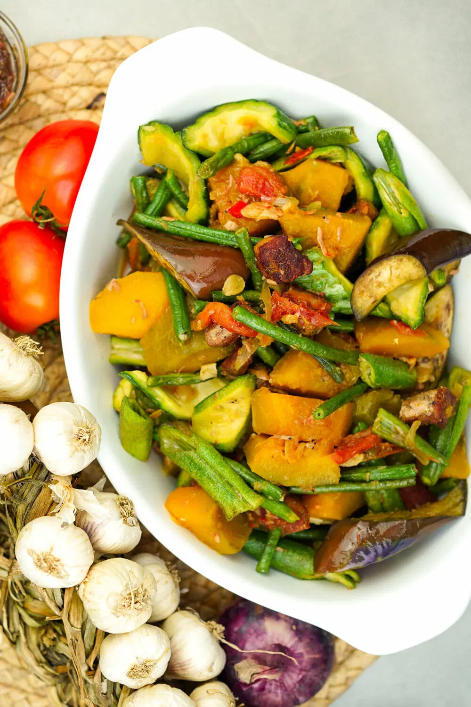

(Discover the Beauty of the North)

Pinakbet- Ilocanos take pride in their version of this vegetable stew. It typically includes bitter gourd (ampalaya), eggplant, okra, string beans, tomatoes, and traditionally flavored with bagoong isda (fermented fish paste). Some versions may include pork or shrimp. Notably, the Ilocano version often omits squash.